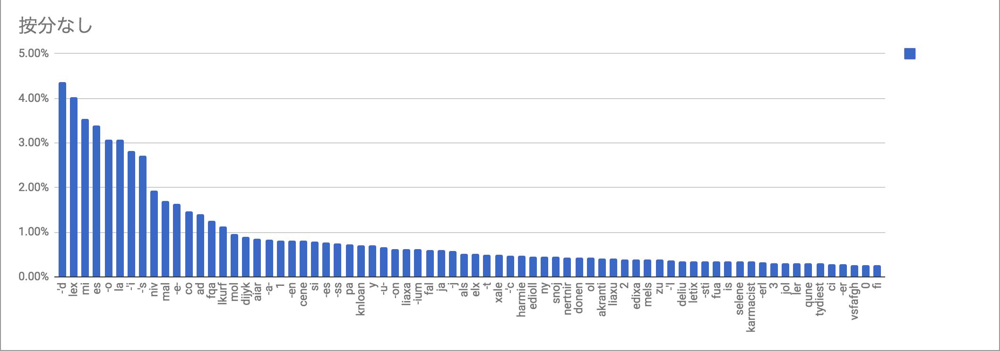
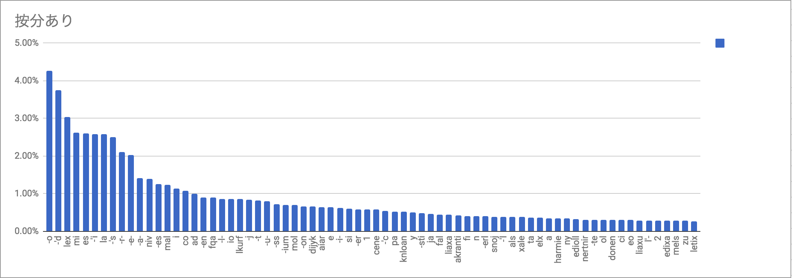
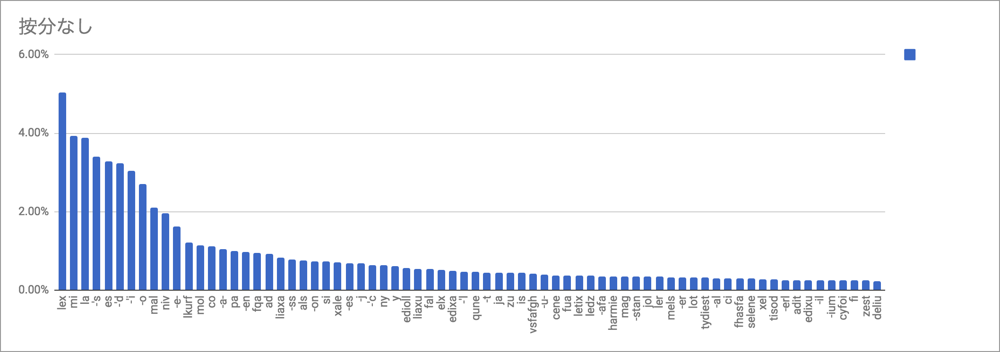
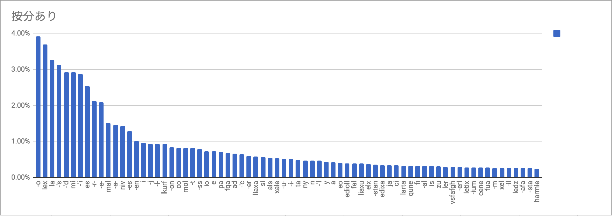

「リパライン語単語分解器」の開発ログです。
使用する単語リストは、リパライン語OTM-JSONから頭字語などを取り除いたこのファイルから、ピリオドやスペースの入った人名や略号など（la+単語として登録されていたものを含む）などを除いたファイル。6557項目が登録されている。
さて、実はリパライン語には「単語と単語がくっ付くときは-r-でしかないのと、-r-はそこまで頻繁に使われないから大半の単語の語幹は一意に決められる」という特性がある。登録されている項目をハイフンの位置により「独立単語」「前置辞」「語中辞」「語尾辞」に分類すれば、独立語と独立語の間には-r-が入るということである。
要するに、「どちらかの側にはハイフンが入っている」という原則と考えれば良い。例を挙げれば、dytyleterはdyty-, -l-, et, -erと分解されるが、このとき項目と項目の間には1つ以上のハイフンが入っている。
とりあえず素朴な実装をして、「いや、この分解はありえない」とかを指摘してもらった方がいいか
— .sozysozbot.@hsjoihs (@sosoBOTpi) 2017年10月25日
とりあえず、文法的な考察をする前に、この条件だけで全探索するプログラムを書いてみるか。やってくうちに追加条件が出てくるでしょう
とりあえず、ハイフンの有無で4ファイルに分離。
規則も記述してJSONにする。
実装できた。

いくつか情報が来たので、それを元に改良する。
まず「語中辞は後方に形態素を要求するが、独立単語(語根)を直接繋げられるのは-r-と-rapt-のみである。-inie-は数詞のみ、その他緩衝音類は後方には接辞を要求する。」とのこと。これに基づいて規則を改定する。
現状の規則はこんな感じ。
[ ["INITIAL","q"], ["INITIAL","q-"], ["q","-q"], ["q","-q-"], ["q-","q"], ["q-","q-"], ["q-","-q"], ["q-","-q-"], ["-q","-q"], ["-q","-q-"], ["-q-","q"], ["-q-","q-"], ["-q-","-q"], ["-q-","-q-"], ["q","FINAL"], ["-q","FINAL"] ]
語中辞を"-q-"と"-r-"に分離して…っと、待てよ。「緩衝音類は後方には接辞を要求する。」にしてしまうとdytyleterが通らないな。「前に来てるのが接辞なら後ろは単語でもいい」のかと聞いてみたところ、『「緩衝音類は前後のいずれかに接辞を要求する」かなあ』とのこと。
さて、これをどう落とし込むかだが、まあ「同一の-q-を2種類立てる」が一時しのぎとしては有効かな。
これをやると重複が発生するので、重複を消去。
いや、うまくやれば解決できるか。「qに後続した場合だけ-q1-、それ以外は-q2-のみ」でいい。
よし重複解決。
しかし["la","-axm","-el","-e-","n"]は弾かれない。これを弾くなら、「緩衝音類は、前に接頭辞が来るか後ろに接尾辞が来るかの2択だ」と定式化すべきだな。
「la-stan-a-'sみたいなことはあるので前後同時に接辞が来ることもある（まあ、弾くわけではないからこれも含むか）」と言われた。まあそうよね。
とりあえず実装できた。
ff「特別警察」が辞書に紛れ込んでいたので削除。
-tは格語尾（「基本的に-'s, -'i, -'cにしかつかないが、-'lt, -'scitの形とかもあるかもしれない」とのこと）とか分離標識とか複代副詞とかにしかつかないらしい。そして必ず語末である。
とりあえず、「必ず語末」「接頭辞・語中辞の後には来ない」が言えるので実装する。
実装した。
「緩衝音が連続することは無い」と言われた。実装した。["dyty-","-l-","et","-er"], ["pask-","-effe","-snej"], ["la","-axm","-el","-en"]が完璧に分解され、「緩衝音が連続しないことは重要だったんやな……」「雰囲気で読んでるからほんとこういう実装をする時に本質が見えてくるのすこ」となった。よきかな。
このことを自慢できるように、複数の単語を入力できるようにした。
句読点を自動で消して、勝手に小文字にするようにもした。
-b- -f- -g- -j- -kh- -rj- -rv- -rw- -rz- -s- -ska -ski -w- -xiciは廃止されたので、「基本無効化して、オプションで有効化させるなどしたい」「廃止された緩衝子音はほとんど出てこないのでそっちの方がいい」となった。
実装した。
「音楽について考察する」でte ke xa sa nje vi fyが非真理設定になった。これにより、xace ["xa","-ce"] 「純粋なミ」とかが潰せる。よってこいつらを辞書から削除。
kymerf 【名詞】裁判官 【名詞】(アレス裁判における)キルメプ [2017:kil mep:FAS:裁断者]
せっかく登録したkymerfが廃止された。ついでにattadzem, nabi'a, splieng, tatiryzurtmilも廃止された。よって以上5単語を辞書から削除。
現状の規則を把握するのがそろそろ大変になってきたので、表を作る。
作った。

DMで「詩語だったらeu--euがどこにでも出て来るので、mi'steuみたいな使い方も許容される」「緩衝音の前後にeuを置くのはセーフ」「普通の接辞と同じで挟まれて語中に出て来ることもある」「二つの独立語を-eu-で結ぶのはアウト」ということを教わった。
ということで、接頭辞eu-と接尾辞-euの挙動はほかのやつらとは異なりますな。-r-群・-q1-群・-q2-群にも当てはまらないので、接中辞として立てる必要もない。
j.v「-tの前に緩衝音は禁止だが、緩衝音ではない-euについてもmi'seutはアウトよな？」 fafs f. sashimi「見たことないし、そんな書き方したくないけどアウトとまでは厳しくないなあ。まあアウトで良いかと思うけど」 j.v「じゃあアウトで（どっちに設定しても手間は変わらんが、まあアウトでいいでしょ）」 fafs f. sashimi「多分実例がない。格助詞と-tは間が無菌状態が好まれるので(意味不明)」
また、「単語+緩衝音+eu」で語が終わるのはセーフで、artergeu[arte-rg-eu]とか可能だそうだ。
「接頭辞+eu」で1語判定、はアウトだが、eu(m)oは単語になりうる(だが意味がない)ので「eu- + 接尾辞」はセーフ。
「単語-r-eu」はアウトだが、「単語-r-eu-単語」はセーフ。ただ、これは「単語」と「eu-単語」を-r-で繋いだもの。
-eu-euは「許可だよ、やらないけど」とのこと。「普通緩衝子音が挟まれ, -eumeuになるけどやるときはやるからなあ」と。
eu-についても同様の考察を行なったが、結果として「普通の接頭辞と完全に同じ挙動である」ということがわかった。
また、*dytyrlarta案件:「q-の後に-r-は来られないのに許容している」というバグを見つけた。あと、「品詞語尾以外の殆どの接辞同士の結合のみで語を構成することはおそらく認められない」という情報が入った（つまり*dytydirはダメ）ので、次回のアプデで修正をかける。
結果、表は次のようになる。

「表示をリパーシェに変更したり、しなかったりできるチェックボックス」が欲しいと言われたので作った。
100tvamとか3'dとかに対応した。
「fente2とかdyty100'dみたいな表現って（意味が通らないのはともかくとして）文法上合法？」と訊いたところ、「合法」とのこと。ちなみにFixa.siertija氏が「fente2、何かに使えそう。コンピュータに関係する反対運動の総称とか(ゲームしてたりスマホ使ってたら頭が悪くなるみたいな類い)」などと興味深い発想をしていた。（以上のやり取りもTWTで行われた。）
調整ぜんぜん效くので、形態素頻出度も提出して✧♡(⋈◍＞◡＜◍)。✧♡
— 🏙 (@sashimiwiki) 2017年11月1日
と言われてたやつを放置してしまっていたので、形態素の集計をとった。というか、コーパスを理語分解器に突っ込んだファイルは既にあるので、後はスクリプトに数えさせるだけである。
とは言ったものの、数え方が問題である。緩衝音とクラスの一致とかを実装していないこともあり、実際に可能な分解よりも多くの分解候補が出てしまう。
仕方がないので、統計を2通り取ることにした。
1.を「按分なし」、2.を「按分あり」と呼ぶこととする。
分析結果は次のような感じである。
 
按分なし: -'d 867 4.36% lex 801 4.02% mi 706 3.55% es 676 3.40% -o 613 3.08% la 612 3.07% -'i 560 2.81% -'s 539 2.71% niv 383 1.92% mal 339 1.70% -e- 324 1.63% co 291 1.46% ad 278 1.40% fqa 249 1.25% lkurf 226 1.14% mol 191 0.96% dijyk 180 0.90% aiar 169 0.85% -a- 164 0.82% 1 162 0.81% -en 161 0.81% cene 160 0.80% si 157 0.79% -es 155 0.78% -ss 148 0.74% |
按分あり: -o 1181.035926 4.26% -'d 1042.000000 3.76% lex 840.000000 3.03% mi 726.397436 2.62% es 719.576610 2.60% -'i 718.033766 2.59% la 716.000000 2.58% -'s 692.500000 2.50% -r- 585.140000 2.11% -e- 560.444049 2.02% -a- 394.038595 1.42% niv 388.000000 1.40% -es 345.565179 1.25% mal 340.539683 1.23% i 316.964752 1.14% co 297.000000 1.07% ad 279.000000 1.01% -en 250.679004 0.90% fqa 250.000000 0.90% -l- 239.630541 0.86% io 238.750000 0.86% lkurf 236.666667 0.85% -j 231.071640 0.83% -t 229.657143 0.83% -u- 223.274459 0.81% |
なお、分析結果の数値データはこちら、使用したソースコードはこちらに置いてある。
気づくこととしては、まず、統計の取り方で順位がそれなりに変わってくることである。あと、例文の偏りのせいでdijyk（自明にりんご文のせい）とaiar（どう考えても航空法が原因）が上位に入っているのがこれまたアレである。ceneもcenestiが混入してるだろうし。
ということで、りんご文と航空法を取り除いてもう一回やってみよう。また、前に文字頻度を測った（「考察する」シリーズ未収録。ここにデータがある）際に、いせにほだけ有意にアポストロフィの頻度が低かった（「翠君にわかりやすくするため格語尾避けて話してるから」とのこと）、とかもあるので、cenesti問題のことも考えていせにほも除くこととする。
んで取り直したものがこちら
 
按分なし: lex 639 5.05% mi 498 3.93% la 491 3.88% -'s 430 3.39% es 417 3.29% -'d 410 3.24% -'i 385 3.04% -o 343 2.71% mal 266 2.10% niv 249 1.97% -e- 205 1.62% lkurf 155 1.22% mol 144 1.14% co 142 1.12% -a- 132 1.04% pa 125 0.99% -en 123 0.97% fqa 121 0.96% ad 116 0.92% liaxa 104 0.82% -ss 98 0.77% als 97 0.77% -on 94 0.74% si 92 0.73% xale 89 0.70% |
按分あり: -o 693.284729 3.92% lex 652.000000 3.69% la 575.500000 3.26% -'s 553.500000 3.13% -'d 517.000000 2.93% mi 516.897436 2.93% -'i 509.473160 2.88% es 448.142208 2.54% -r- 374.638041 2.12% -e- 368.113295 2.08% mal 267.539683 1.51% -a- 257.559621 1.46% niv 253.000000 1.43% -es 228.953030 1.30% -en 180.445671 1.02% i 172.158691 0.97% -j 164.851396 0.93% -l- 164.820500 0.93% lkurf 164.166667 0.93% -on 147.133333 0.83% co 146.666667 0.83% mol 144.833333 0.82% -t 144.323810 0.82% -ss 139.800000 0.79% io 129.250000 0.73% |
なお、分析結果の数値データはこちらに置いてある。ソースコードは前回と同じ。
話は2017年11月7日に遡る。「いせにほ」を分解器に流し込んだところ、kantiergylistanとsnyrlirsyuが分解できなかった。
kantiergylについてはkanti -e- -rg- -ylを意図しているのであろうが、-e- -rg-が「緩衝音二連続の禁」に抵触するので弾かれている。kantiの語法欄に『kantiergyl 教典』と書いてありこれが文意に合うことから、結果的に「krantie-rg-ylとkanti-rg-ylの混同によって例外的に生まれた独立単語、『kantiergyl 教典』」という判定となった。
fafs「辞書登録しとくかな」
j.v「(kantiの)語法欄から独立させて一語として立てたほうが良さそう」
さて、問題は次のsnyrlirsyuである。snyr -l- -i- -r- syuでこれまた緩衝音二連の禁に抵触している。なぜこのような現象が発生しているのか考察したところ、
fafs「snyrrsyu（よくわからんが気に入らなかったらしい） → snyrirsyu（母音緩衝音は子音の前に付くためsnyrrisyuではない） → snyrlirsyu（二重母音「母音連続」の意図と思われるを避けた）」
という説が生まれた。さて、snyrrsyuが「気に入らない」のはなぜだろう？
コーパスで長母音+/r/を調べたところ、「Vrr摩擦って禁則なんじゃね？」という説が浮かび上がった（rkhは単一音素なのでカウントしない）。なお、fafs氏曰く「理語って音韻論の禁則無かったからこれが初めてなのかな」「三年がかりで見つかる禁則」とのことである。
その後、調査を重ねたところ、
@sashimiwiki 震えr+摩擦の禁則、唯一の例外としてafeneljrfaを見つけた
— .sozysozbot.@hsjoihs@jekto.vatimeliju (@sosoBOTpi) 2017年11月8日
@sashimiwiki 【報告】コーパスで検索掛けたところ、rの後に母音・半母音以外の持続可能な音（鼻音・摩擦音）が出てくる例は厳密にafeneljrfa一語のみ。（いせにほ#37のHerrmaは理語ではないのでカウントしない）
— .sozysozbot.@hsjoihs@jekto.vatimeliju (@sosoBOTpi) 2017年11月9日
という結果が得られた。ということで、そもそも震えrの後に持続可能な音が来るのが禁則である可能性が高い。
2017年11月9日のチャットにおいて。
fafs「rlの[ɹ]っていつどのように起きたのだろうか」 j.v「あれでしょ、有音rの後の持続音禁則でしょ。母音の後でも起こるのは子音後のやつの類推」 fafs「有音r後の持続音禁則で異音になるか、長音かに分かれたのか」 j.v「rkhが有音の時だけ[ʁ]で母音に後続するときは[:x]なのは、類推が起きなかったから、という説明もできるなぁ（頻用語shrloに含まれるrlとは存在感が違ったんでしょ）」 fafs「あー類推ってそういうことか」 fafs「音声学みがあるな」 j.v「歴史って感じがあって良さがある」
たのしい。
ちなみに、上記の考察により「snyrrsyu（よくわからんが気に入らなかったらしい） → snyrirsyu（母音緩衝音は子音の前に付くためsnyrrisyuではない）」の箇所は解決したのだが、その後の「snyrirsyu（母音緩衝音は子音の前に付くためsnyrrisyuではない） → snyrlirsyu（二重母音「母音連続」の意図と思われるを避けた）」が解決していないことに気がついた。というのも、長母音二連続自体は
辞書：aiarurn, aror, derar (← DA), destirerten, dyrur, juror, laustirorxer, lefarern, lererer (← LEE), lermermeryryr, morarsnerf, nartarerle, nerarcertereclartzektarl, nuryr, snierur, sniror, snyror, virortle, werperir (← WPI), zarera
コーパス：xalurerl'i, dyrur, tvarcarerl, parcaxerirfe'i, dzepararzrgerni'ar, kotielelyrer, tvarcarer, xalurerl, virortle, direrrofton, liorer, snirorerl'i, sniror
などと比較的多くの例が確認できるからである。
なお、この調査の過程でコーパスのtypoを発見した。
@sashimiwiki tvacarerl →tvarcarerl https://t.co/UPf53TUwne
— .sozysozbot.@hsjoihs@jekto.vatimeliju (@sosoBOTpi) 2017年11月18日
話は遡るが、2017年11月8日~9日頃に、DMで話したところ、
そういえば形態素解析機、そのまま辞書で意味が見られるようにすると便利だ ・形態素解析機に付加したいもの -表示をリパーシェに変更したり、しなかったりチェックボックス -分析した形態素の意味(訳語部分？)を表示する。 -共起表現をコーパスから取り出す
と言われた。
このうち、「表示をリパーシェに変更したり、しなかったりチェックボックス」は11.で作った。一方、「分析した形態素の意味(訳語部分？)を表示する」ためには、「訳語」欄に語源と派生語も入ってしまっているという現状のOTM-JSONの問題を解決しなくてはいけない。「手作業で分離するのはめんどいから、なんかスクリプト書くしかない」わけだが。「PDICの吐いたファイルをアップロードする→OTMに変換して→形態素分解・意義表示器が使える形式に自動変換までしてくれるのがいいよね」みたいなことを言われたので、当時のOTM-JSONを作成したZiphilさんに訊いてみたところ、
@ziphil この「単純変換」のスクリプトとかってあります？（諸用途のため理語辞書用のチューニングをしたい） https://t.co/B703PcEZbv
— .sozysozbot.@hsjoihs@jekto.vatimeliju (@sosoBOTpi) 2017年11月9日
ZpDICの変換機能を使ったのでスクリプト単体はありません。
— Ziphil Shaleiras (@Ziphil) 2017年11月9日
とのこと。
ということで、OTMまでの変換はできているので、それを機械に読みやすい形に美化するためのスクリプトを書かなくてはならない。
15.で言及したスクリプトはまだ作っていないが、それはそうと、Githubに上がっているOTMは2017年4月3日のものだったりする。これではアレなので、とりあえずOTMだけでも更新した。もちろん分解器は追いついていないので、スクリプトを書くとかしてなんとかせねばである。
TypeScriptに移行した。